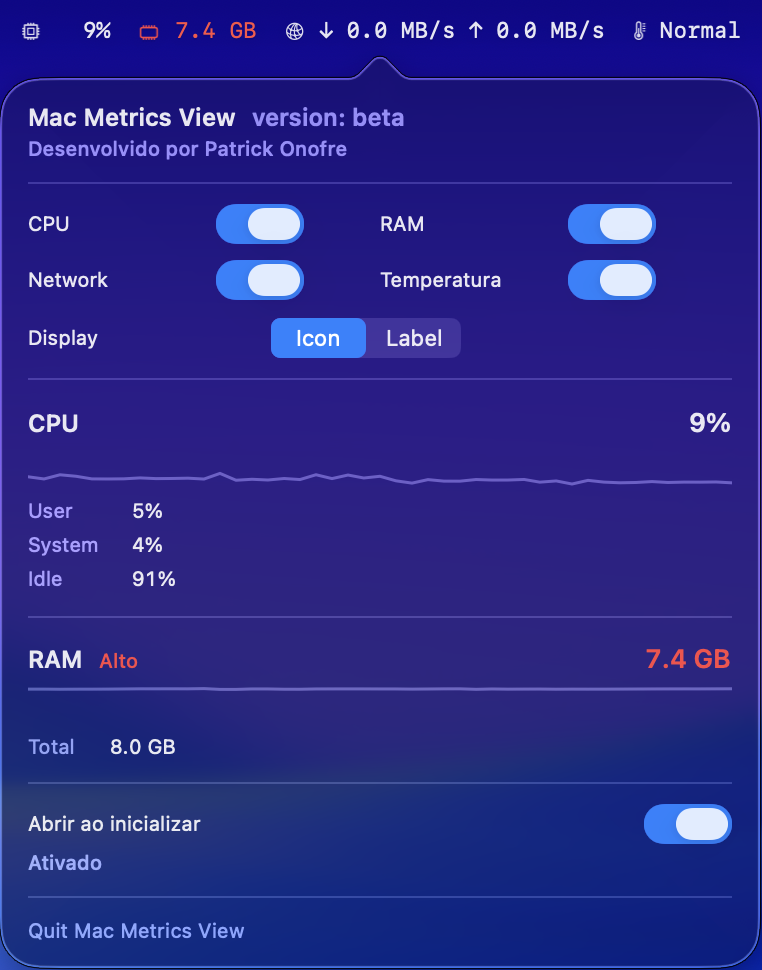

Modo limpeza
Trave teclado e trackpad por 15s a 5min para limpar a tela sem disparar cliques ou teclas. Requer permissao de Acessibilidade do macOS.
Beta 0.2 para macOS
Um app nativo e compacto para entender a pressao do seu Mac sem abrir o Activity Monitor.
Sem conta. Sem telemetria. Leitura local dos indicadores do sistema.

Novidades na versao 0.2
Trave teclado e trackpad por 15s a 5min para limpar a tela sem disparar cliques ou teclas. Requer permissao de Acessibilidade do macOS.
Ative no popover para o Mac Metrics View abrir sozinho ao iniciar a sessao no macOS. Reversivel a qualquer momento.
A interface acompanha o idioma do sistema, em portugues ou ingles, sem configuracao manual.
Feito para ficar quieto
Veja CPU, RAM e rede perto do relogio do macOS, com indicadores curtos e faceis de escanear.
Clique no indicador para abrir detalhes recentes, alternar metricas e ajustar a exibicao.
Mostre apenas o que importa. Metricas ocultas param de coletar novos dados.
Interface discreta, responsiva a claro e escuro, pensada para parecer parte do sistema.
Privacidade primeiro
O Mac Metrics View le CPU, memoria e contadores locais de rede. Ele nao exige login, nao envia telemetria e nao depende de servicos externos para funcionar.
Download
Esta versao e um beta local para macOS (Apple Silicon). Na primeira abertura, o macOS pode pedir confirmacao por ser um app ainda nao notarizado.